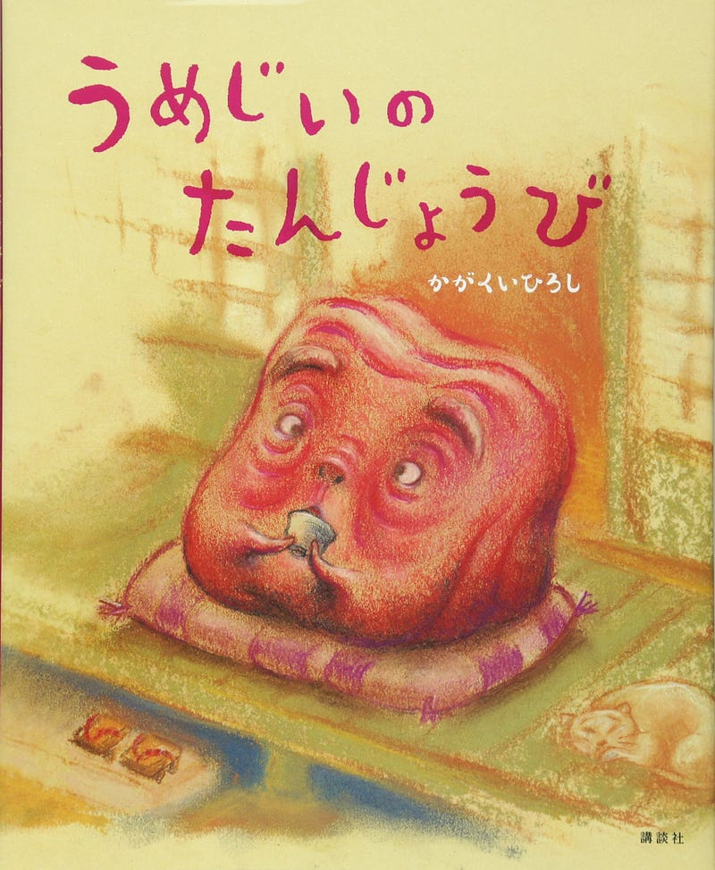

「うめじいのたんじょうび」
「うめじいのたんじょうび」
「うめじいのたんじょうび」という絵本が我が家でここ数日空前の大ブームである。

うめじいのたんじょうび (講談社の創作絵本)
Amazonでかがくい ひろしのうめじいのたんじょうび (講談社の創作絵本)。アマゾンならポイント還元本が多数。かがくい ひろし作品ほか、お急ぎ便対象商品は当日お届けも可能。またうめじいのたんじょうび (講談社の創作絵本)もアマゾン配送…amzn.to
Amazonでかがくい ひろしのうめじいのたんじょうび (講談社の創作絵本)。アマゾンならポイント還元本が多数。かがくい ひろし作品ほか、お急ぎ便対象商品は当日お届けも可能。またうめじいのたんじょうび (講談社の創作絵本)もアマゾン配送…amzn.to
話はしごく簡単で、何歳かわからないうめじいの年齢を調べようとしたけど、結局わからないので、もういいや、誕生日を祝おう、となって祝っておしまい。それだけ。
作者は「だるまさん」シリーズのかがくいひろしさん。デビュー前の佳作賞受賞作品が最近出版されたらしい。
だるまさんシリーズ「が・の・と」(3点セット)
人気のファーストブック、『だるまさんが』、『だるまさんの』、『だるまさんと』が入った、3さつケース入り。ギフトにもおすすめです。収録作品：だるまさんが/「だ・る・ま・さ・ん・が」左右にうごくだるまさん。ページをめくると......あらら…amzn.to
人気のファーストブック、『だるまさんが』、『だるまさんの』、『だるまさんと』が入った、3さつケース入り。ギフトにもおすすめです。収録作品：だるまさんが/「だ・る・ま・さ・ん・が」左右にうごくだるまさん。ページをめくると......あらら…amzn.to
この話が我が家で大受けしてるのは最初は普通の会話をしているのに、ふたごがでてきてステレオ効果みたいなしゃべり方になったり、語尾に必ず「〜づけ」がでてきたり、そして肝心のうめじいにいたってはでたらめな言葉をフガフガと話すだけで年齢を聞いても一切わからない部分の描写である。うめじいは「トーテンポー」とか「ウッスラペン」とかしか言わない。
4歳児とかにはこのメチャクチャ加減がおもしろいらしい。あと、わりと自分で読めるくらいやさしい話なのも気に入ってるらしい。
親目線でいうと、話がシンプルな分だけ、読み聞かせにはメリハリを聞かせないと全くおもしろくならないのでそこだけ気をつけましょう。
でも結構おすすめです。親もついつい「うめことば」で喋ってしまう。
ウッスラペン。